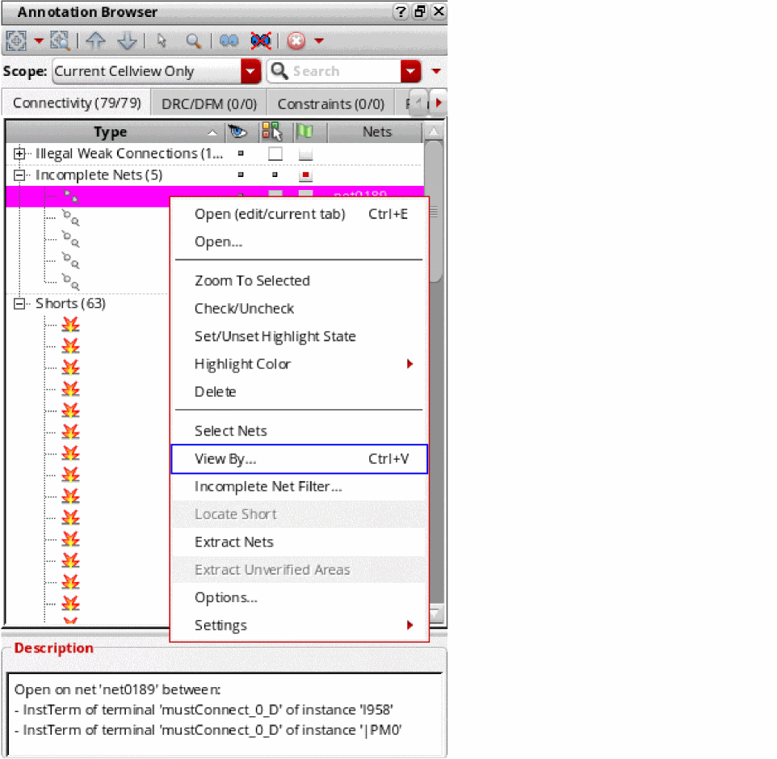
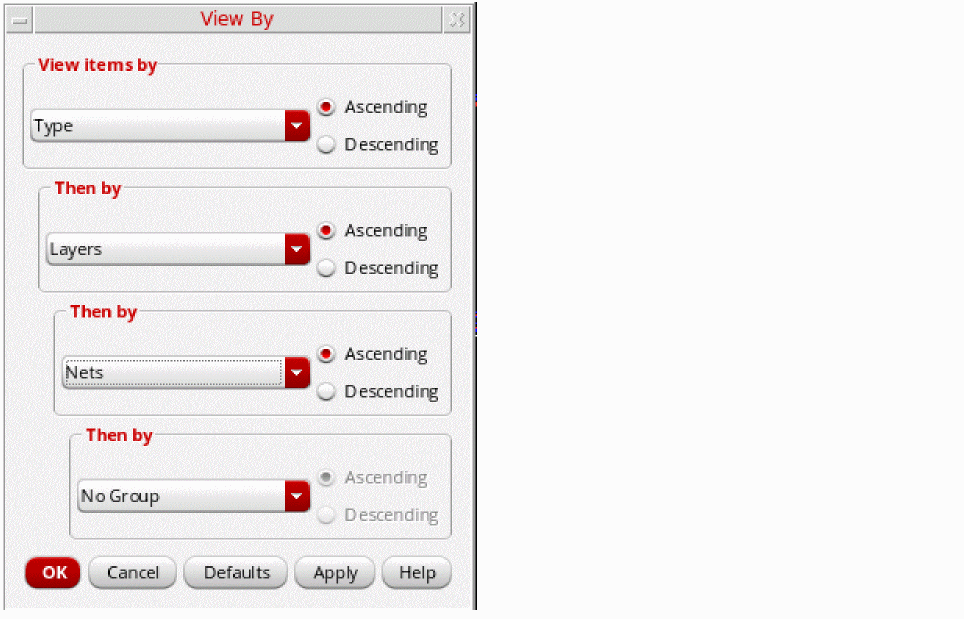
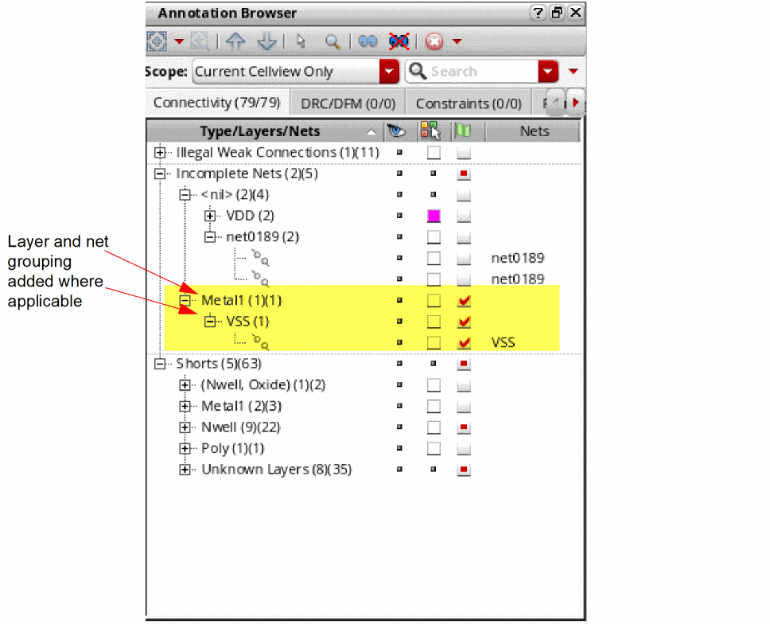
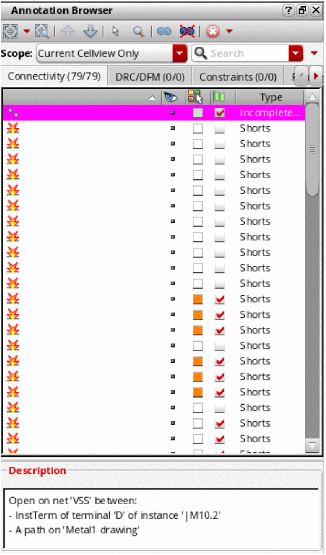

Grouping Markers in the Annotation Browser
To change the way the markers displayed in the Annotation Browser are grouped:
-
In the browser pane, right-click anywhere and choose
The View By form is displayed showing the current groupings. In this example, we will change these to group first by Type, then by Layers, and finally by Nets, with each group sorted in Ascending order.
 -
Click OK to apply the changes and to close the form.
Where the layer information is available, the markers in the browser pane are grouped by layers.

Restoring Default Groupings in the Annotation Browser
To restore the default grouping defined for the tab:
Annotation Browser Display with No Grouping Rules
If you specify no grouping, the Annotation Browser tree view is flattened, the tree column is removed, and the previous Top grouping column is restored and used to define how the markers are sorted.

Related Topics
Annotation Browser Shortcut Menus
Grouping Markers in the Annotation Browser
Sorting Markers in the Annotation Browser
Filtering Markers in the Annotation Browser
Return to top